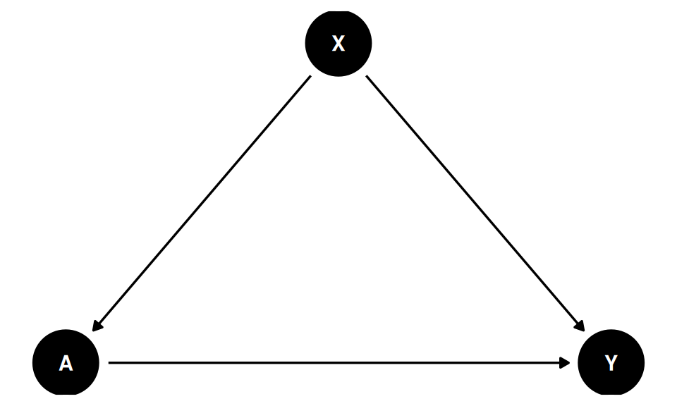

n variables
1566 11 4 Applied Graph Workflow: Smoking Cessation
The previous chapter used small graph examples. Here I apply the same graph-identification-estimation workflow to a real data set: the complete-case National Health and Nutrition Examination Survey I Epidemiologic Follow-up Study (NHEFS) data distributed through the causaldata package.
The question is:
What is the effect of quitting smoking on weight change from 1971 to 1982?The treatment is qsmk, an indicator for quitting smoking between baseline and follow-up. The outcome is wt82_71, weight change over the follow-up period. This is observational data. The effect is not identified by the data alone. It is identified only after we state the adjustment assumptions in the graph.
4.1 Data
For this example, keep the treatment, outcome, and baseline covariates that are commonly used in NHEFS smoking-cessation examples.
| qsmk | wt82_71 | sex | race | age | school | smokeintensity | smokeyrs | exercise | active | wt71 |
|---|---|---|---|---|---|---|---|---|---|---|
| 0 | -10.090 | 1 | 2 | 42 | 7 | 30 | 29 | 3 | 1 | 79.04 |
| 0 | 2.605 | 1 | 1 | 36 | 9 | 20 | 24 | 1 | 1 | 58.63 |
| 0 | 9.414 | 2 | 2 | 56 | 11 | 20 | 26 | 3 | 1 | 56.81 |
| 0 | 4.990 | 1 | 2 | 68 | 5 | 3 | 53 | 3 | 2 | 59.42 |
| 0 | 4.989 | 1 | 1 | 40 | 11 | 20 | 19 | 2 | 2 | 87.09 |
4.2 Adjustment DAG
Start with the grouped graph
X -> A -> Y
X -----> Ywhere X is the baseline covariate set, A is quitting smoking, and Y is later weight change. This graph says the baseline variables may affect both quitting and later weight change, and that there is no unmeasured common cause of quitting and later weight change after conditioning on those baseline variables.
ggdag(conceptual_graph) + theme_dag_blank()
For estimation, expand X into the observed NHEFS columns. The expanded graph is still an adjustment DAG: each baseline variable is allowed to point into quitting and into later weight change.
baseline_vars <- setdiff(nhefs_cols, c("qsmk", "wt82_71"))
build_grouped_graph <- function(baseline) {
edges_X_to_A <- paste0(baseline, " -> qsmk")
edges_X_to_Y <- paste0(baseline, " -> wt82_71")
body <- paste(c(edges_X_to_A, edges_X_to_Y, "qsmk -> wt82_71"),
collapse = "\n ")
dagitty(paste0("dag {\n ", body, "\n}"))
}
nhefs_graph <- build_grouped_graph(baseline_vars)
c(vertices = length(names(nhefs_graph)),
directed_edges = length(edges(nhefs_graph)$v)) vertices directed_edges
11 19 4.3 Identification
dagitty::adjustmentSets checks the graph before estimation. In this adjustment DAG, the minimal sufficient adjustment set is the full baseline:
adj_sets <- adjustmentSets(nhefs_graph, exposure = "qsmk",
outcome = "wt82_71", type = "minimal")
adj_sets{ active, age, exercise, race, school, sex, smokeintensity, smokeyrs,
wt71 }The graph therefore identifies the causal mean by the adjustment formula
\[ E[Y(a)] = E_X\{E(Y \mid A=a, X)\}. \]
This formula is not a modeling claim by itself. It is the observed-data functional implied by the graph. Estimation still requires nuisance models for the outcome regression and treatment mechanism.
4.4 Estimation with AIPW
The book keeps identification and estimation as separate steps. The graph supplies the adjustment set; the estimator uses that set.
aipw_backdoor <- function(data, treatment, outcome, adjust) {
fmla_y <- as.formula(paste0(outcome, " ~ ", treatment, " * (",
paste(adjust, collapse = " + "), ")"))
fmla_a <- as.formula(paste0(treatment, " ~ ",
paste(adjust, collapse = " + ")))
mu_fit <- lm(fmla_y, data = data)
pi_fit <- glm(fmla_a, data = data, family = binomial())
d1 <- data; d1[[treatment]] <- 1
d0 <- data; d0[[treatment]] <- 0
mu1 <- predict(mu_fit, newdata = d1)
mu0 <- predict(mu_fit, newdata = d0)
pi1 <- predict(pi_fit, newdata = data, type = "response")
pi1 <- pmin(pmax(pi1, 0.01), 0.99)
w <- data[[treatment]]; y <- data[[outcome]]
if1 <- w * (y - mu1) / pi1 + mu1
if0 <- (1-w) * (y - mu0) / (1 - pi1) + mu0
psi <- if1 - if0
est <- mean(psi); se <- sd(psi) / sqrt(length(psi))
ci <- est + c(-1, 1) * qnorm(0.975) * se
data.frame(estimand = "Quit smoking vs continued smoking",
estimate = signif(est, 4),
lower_95 = signif(ci[1], 4),
upper_95 = signif(ci[2], 4),
se = signif(se, 4))
}
aipw_backdoor(nhefs, "qsmk", "wt82_71", adjust = baseline_vars) |> kable()| estimand | estimate | lower_95 | upper_95 | se |
|---|---|---|---|---|
| Quit smoking vs continued smoking | 3.293 | 2.317 | 4.269 | 0.4981 |
Under the DAG, the estimate is the average effect of quitting smoking versus continuing smoking on weight change in the complete-case NHEFS population. The positive estimate is consistent with weight gain after quitting. The causal interpretation depends on the graph, especially the assumption that the measured baseline variables block the relevant backdoor paths.
The sd(psi) / sqrt(n) standard error is the AIPW influence-function SE and is valid here because the nuisances are parametric logistic/linear fits. If you replace them with flexible machine learners, use cross-fitting and an influence-function (or bootstrap) variance instead; the plug-in SE on full-sample ML fits is not generally valid.
4.5 Sensitivity Graph
Now encode a different assumption: quitting and later weight change share an unobserved common cause even after conditioning on the measured baseline variables. In an ADMG this is a bidirected edge, qsmk <-> wt82_71.
build_sensitivity_graph <- function(baseline) {
edges_X_to_A <- paste0(baseline, " -> qsmk")
edges_X_to_Y <- paste0(baseline, " -> wt82_71")
body <- paste(c(edges_X_to_A, edges_X_to_Y,
"qsmk -> wt82_71", "qsmk <-> wt82_71"),
collapse = "\n ")
dagitty(paste0("dag {\n ", body, "\n}"))
}
sensitivity_graph <- build_sensitivity_graph(baseline_vars)
sens_adj <- adjustmentSets(sensitivity_graph, exposure = "qsmk",
outcome = "wt82_71", type = "minimal")
cat("Number of sufficient adjustment sets:", length(sens_adj), "\n")Number of sufficient adjustment sets: 0 The identifying conclusion changes. Under this graph, the observed NHEFS variables are not enough to identify the effect: adjustmentSets returns an empty list. This is why the graph has to come before the estimator. The same data can imply different causal answers under different assumptions.
4.6 Structured Baseline Graph
The simple adjustment graph is often the clearest starting point. A more detailed DAG can record baseline ordering: demographics may precede education, smoking history, activity, and baseline weight; those variables may then affect quitting and later weight change.
structured_graph <- dagitty("dag {
age -> school
age -> smokeyrs
age -> wt71
age -> active
age -> exercise
age -> qsmk
age -> wt82_71
sex -> smokeintensity
sex -> smokeyrs
sex -> wt71
sex -> qsmk
sex -> wt82_71
race -> school
race -> smokeintensity
race -> qsmk
race -> wt82_71
school -> smokeintensity
school -> qsmk
school -> wt82_71
smokeyrs -> smokeintensity
smokeyrs -> qsmk
smokeyrs -> wt82_71
smokeintensity -> qsmk
smokeintensity -> wt82_71
exercise -> wt71
exercise -> qsmk
exercise -> wt82_71
active -> wt71
active -> qsmk
active -> wt82_71
wt71 -> qsmk
wt71 -> wt82_71
qsmk -> wt82_71
}")
struct_adj <- adjustmentSets(structured_graph, exposure = "qsmk",
outcome = "wt82_71", type = "minimal")
struct_adj{ active, age, exercise, race, school, sex, smokeintensity, smokeyrs,
wt71 }data.frame(
matches_full_baseline = setequal(unlist(struct_adj[[1]]), baseline_vars)
) |> kable()| matches_full_baseline |
|---|
| TRUE |
For this treatment effect, the detailed baseline DAG is adjustment-equivalent to the simpler expanded DAG. It implies the same sufficient adjustment set and the same identifying functional. The extra arrows among baseline variables may be useful for documentation, but they are also extra causal assumptions. If those assumptions are not needed for the estimand, the grouped adjustment graph is usually easier to defend.